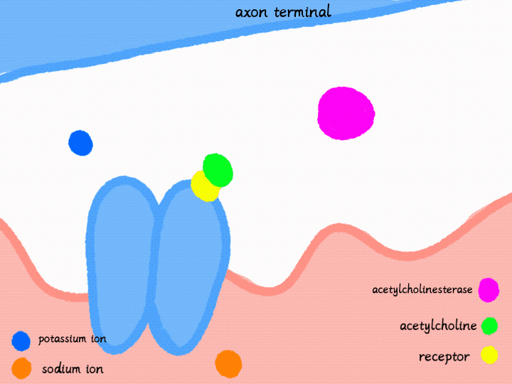

Another important point to know is that ACh can also be recycled! An enzyme called Acetylcholinesterase will break down the ACh into acetic acid and choline, the choline will move back into the axon terminal, ready to make more ACh.
The receptor problem has been corrected in our simulation. Let's see whether the muscle action potential can now travel normally.